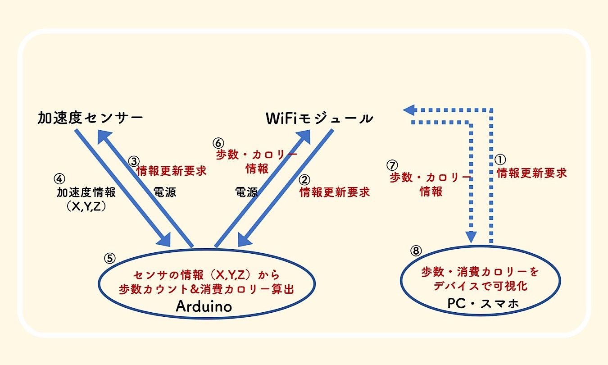

振り返り
今回の課題
・Arduino内で歩数カウントと消費カロリーを算出する
・WiFiモジュールとPC（スマホ）でリアルタイムの情報交換をする
・加速度センサー、WiFiモジュール、Arduinoをまとめる箱を作る
構想
■階段を使うことのプラスイメージを持ってもらうにはどのようなIoTサービスが必要か（メインテーマ）
●階段使用時の消費カロリーを可視化する装置とIoTサービスを作ってみよう！
■消費カロリーを可視化するためにはどうすればいいか？
●心電モニタセンサーを使ってみても面白そう！
：心電モニタ
とセンサー合わせて7000円越え…価格面で購入を断念。(´Д⊂ヽ
●歩数から消費カロリーが求められそう：参考ページ
●加速度センサを使って歩数を計測できそう：参考ページ
■加速度センサとWiFiモジュールとArduinoを使用して、リアルタイムの消費カロリー表示ができるのでは？
●リアルタイム通信はできそう：参考ページ
→リアルタイムの消費カロリー表示をするために必要なモジュールを買ってみる
作業進捗
加速度センサーの計測値をグラフ化することに成功
反省と次回目標
▪今のままだと残り一か月で完成できない可能性がある。作業効率が悪すぎるのを改善しなければならない。
☞できることは着実に進めて、問題解決したら一気に前進にする。
役割を分担させて、行き詰まる前提で進めていく。
個々人での次回目標
・あみくら：加速度モジュールでの歩数計速が可能か試す。・ひで：加速度センサー、WIFIモジュール、Arudinoをまとめる箱をFusionと3Dプリンタで作る。
・なるみ：プロジェクトノートの作成
・たねたろー：Arudinoを使用した消費カロリーを表示するシステムの作成
その他
・ESP-WROOM-02 開発ボード （WiFiモジュール）・KXR94-2050 （3軸加速度センサモジュール）